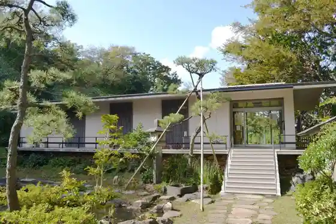

Roadside Station (Echigo Izumozaki Tenryo Village)
Izumozaki, Niigata · 0258-78-4000 · Official / source link
Hamayaki Ki
Izumozaki, Niigata · 0258-78-2291 · Official / source link
Ryokan to Yuhi no Oka Park
Izumozaki, Niigata · 0258-78-2291 · Official / source link
Ryokan Memorial Museum
Izumozaki, Niigata · 0258-78-2370 · Official / source link

Kamifusen
Izumozaki, Niigata · 0258-78-2045 · Official / source link
Ryokan Do
Izumozaki, Niigata · 0258-78-2250 · Official / source link
I Hana Beach
Izumozaki, Niigata · 0258-78-2291 · Official / source link
Basho Sono
Izumozaki, Niigata · 0258-78-2291 · Official / source link
Izumozaki Ichigo Hatake
Izumozaki, Niigata · 080-2025-9881 · Official / source link
Tsumairi Ri no Machinami
Izumozaki, Niigata · 0258-78-2250 · Official / source link
Hoken Fukushi Sogo Center Fureai Village
Izumozaki, Niigata · 0258-41-7133 · Official / source link
Sekai Nihitotsu ! Orijinaru Kamifusen Shoku Tsuke Experience
Izumozaki, Niigata · 0258-78-2291 · Official / source link
Ryokan Zazo
Izumozaki, Niigata · 0258-78-2250 · Official / source link
Ryokan to Basho Meguri
Izumozaki, Niigata · 0258-78-2291 · Official / source link
Izumozaki (Bishoku) Machi Meguri
Izumozaki, Niigata · 0258-78-2291 · Official / source link
Izumozaki Furusato Katari Be
Izumozaki, Niigata · 0258-78-2291 · Official / source link